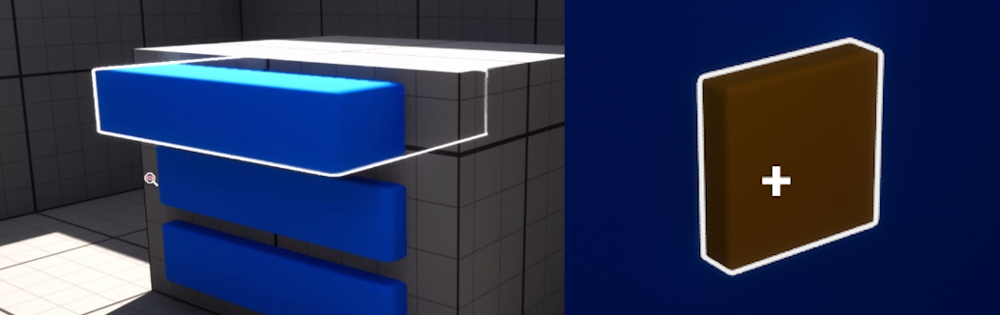

Unreal Engine Five - Interaction System Development
Mechanic - 3D Interaction System:
Key points in feature development:
- First Implementation of Object Dragging (Code)
- Mouse Cursor Following Points in 3D Space
- First Demo Video
- Momentum-Based Object Movement
- Object Carrying and Precision Placement
- Accurate 3D Valve-Interaction (Code)
- 3D-Interactive Books
- Improved Object Carrying
Initial Foundations:
My first steps were to create a component attached to the player camera to handle player-side logic.
Raycasts find viewed actors and check if it contains an interactor component or child class.
The component family use polymorphism to handle interaction logic for different types of objects.
Selected objects receive a highlight effect. This is lost when another object is selected or the player looks away.
The time to deselect after looking away is adjustable, this sort of coyote time approach helps make small objects less fiddly.
The first interactor child class sent a timed message to the player when used.
To stop multiple messages overlapping, the current widget instance is tracked and replaced if a new one is sent.
Mouse/Cursor Interaction:
Next, I let the player toggle between normal mouse control, and using a cursor to select objects.
The cursor is toggled by holding a key. Its position on the screen is used to fire rays.
Once this was set up, I added dynamic cursor icons based on the type of interactable object selected.
This is done through a function in the interactor component,so each child class could set a suitable cursor icon.
To allow for camera rotation in cursor mode, I added a check that would apply rotation if the cursor was sufficiently close to any edge of the screen.
First Implementation of Object Dragging:
The target after the cursor mode was the ability to drag objects, such as draws and hinged doors.
This feature would be heavily iterated upon.
A draggable interactor class was made to hold the dragging logic shared between all draggable objects.
Separate child classes would handle linear and angular movement.
I used Unreal Engine’s Enhanced Input Action Mapping to discern between tapping or holding the interact key, for interaction or dragging.
Code - Dragger Input Handling:
The object receives a vector from the player's mouse movement, and uses a dot product to compare this vector against its direction vector.
The more the two vectors align, the more the interactor will move forwards or backwards between its end-points of movement.
The vector was produced using the player camera’s up and right vectors multiplied by mouse input values.
This produced a problem; If the player’s view aligned enough with the object direction vector, input could only be given in directions that would not induce movement.
To solve this, a second input vector was made that turned mouse up/down movement into the forwards/backwards direction.
These two input vectors were mixed based on a dot product of the player camera forward vector and the draggable object direction vector.
Hence, the more the player view and direction vector align, the more the alternate vector is used for drag-input instead, solving the problem.
const FVector& InteractorRightVector = PlayerInteractor->GetRightVector();
const FVector& InteractorUpVector = PlayerInteractor->GetUpVector();
const FVector& InteractorForwardVector = PlayerInteractor->GetForwardVector();
const FVector& ActorForwardVector = GetOwner()->GetActorForwardVector();
FVector InputVector = ( InVector.X * InteractorRightVector ) - ( InVector.Y * InteractorUpVector );
const FVector AlternateInputVector = ( InVector.X * InteractorRightVector ) - ( InVector.Y * InteractorForwardVector );
const float MixValue = fabs( FVector::DotProduct(InteractorForwardVector, ActorForwardVector) );
InputVector = FMath::Lerp( InputVector, AlternateInputVector, MixValue );
float InputAlignment = FVector::DotProduct(InputVector, ActorForwardVector);
const float Scalar = (CursorMode) ? DragCursorMultiplier : DragMouseMultiplier;
InputAlignment = InputAlignment * MovementScale * Scalar;
AlternateInputVector here is the alternate mapping of mouse movement to 3D direction for when the player and movement vector greatly align.
CursorMode indicates whether the player is using their cursor, in which case a different scalar is applied.
This first implementation was a milestone in progress, but also highlighted several problems;
The highlight method showed through other surfaces, and the cursor moved separately from the object being dragged.
Furthermore, there was a lack of momentum within dragged objects if they were released mid-movement.
Object Trailing:
To create the impression of momentum, draggable interactors recorded their last change in progress.
If dragging stops, it instead moves using this recorded value as it decreases towards zero over time.
Object Highlight Improvements:
The initial object highlight method would highlight behind other geometry, which wasnt great.
It used UE5’s custom stencil buffer for a simple edge detection method that ignored all other geometry.
To improve this, I compared the custom depth buffer with the standard depth buffer, ignoring occluded parts of the object.

Mouse Cursor Following Points in 3D Space:
To fix the disconnect between object and cursor movement, significant changes had to be made.
Whenever a draggable object is locked in for interaction, the last point of contact between the cursor and the object is saved.
This point's offset is saved and moves with the actor, translating into screenspace to position the cursor widget.
First Demo Video:
A video was made at this stage, which also shows other features like inspecting an area to look at smaller details.
Momentum-Based Object Movement:
To create smoother and more "weighty" object handling, I tested a new approach.
Previously object momentum only applied after the player released an object. It would now be the sole driving force moving the object.
The player contributes to it via input, and the momentum naturally moves towards zero.
I also improved on a previous design choice by moving input multipliers from the player character to the draggable object, so I can fine tune individual objects to handle differently.
This, after the tweaking of some parameters, produced smoother and overall better object movement.
I reenabled player rotation from the cursor being close to the screen edge, this produced smoother movement and let the player follow a moving object better.
The rate of rotation was changed to increase the closer the cursor gets to the edge, creating smoother movement compared to the original "on/off" state of turning.
Vertical Slice, Tweaks:
At this point, a brief demo was made to practise using the system in an environment more resembling a game than a testing-room.
This was done using purpose-made assets, and gave good practise in using other parts of the engine.
It also helped to identify small issues or bugs, alongside needs like tweaking player collisions to be suitable to cramped spaces.
Object Carrying and Precision Placement:
A key request after the demo room was the ability to pick up and carry objects in a way that didn't disrupt other mechanics.
I added a physics handle which held objects near the bottom of the screen, using offsets stored in valid objects.
This worked, but putting the object down was limited to dropping it from its carrying position, typically dumping your object onto the floor.
To solve this, I added a way of precisely positioning the object before releasing it.
The physics handle target is set by a raycast from the cursor screen position.
The point of impact has an offset applied in the direction of the hit surface normal.
This slightly floats the object above a surface until it is released, and reduces unwanted collisions when moving the object around sharp corners.
Lack of ray collision is also accounted for, to prevent any unwanted behaviour.
This solution has proven suitable, though I would like to explore any ways to further improve it.
Further Applications of Mechanics:
I wanted to build on my system so interaction components could be used as building blocks in interactive machines and puzzles.
The first step was to improve dragger components, to recognise when an object enters or exits its limits of movement.
I could use this for objects such as levers or breaker switches. I used C++ delegates to let these components communicate with the rest of the level.
I tested this new functionality with a breaker switch, that toggled the power to a room's lighting and a keypad needed to unlock a door.
The keypad was made of interactive buttons and a widget component, to avoid unimmersive popup widgets filling the screen.
Accurate 3D Valve-Interaction:
As I expanded on my interaction system, I found the need to interact with axel-based objects like valves.
The method for hinged objects couldn't be used, because hinged objects rely on a vector indicating the "forward" direction that a door or lever is facing in.
Hence, I had to make a method that uses the player's mouse movement relative to the point on the wheel by which it is held.
This involved creating a vector perpendicular to the axis of rotation, between it and the point-of-holding. From this and the axis of rotation, a vector perpendicular to both can be created.
This gives a vector that is tangential to the circle and perpendicular to the axis of rotation, against which to compare the player input.
const FVector& InteractorRightVector = PlayerInteractor->GetRightVector();
const FVector& InteractorUpVector = PlayerInteractor->GetUpVector();
const FVector& ForwardVector = GetOwner()->GetActorForwardVector();
const FVector& RightVector = GetOwner()->GetActorRightVector();
const FVector& UpVector = GetOwner()->GetActorUpVector();
const FVector& ActorLocation = GetOwner()->GetActorLocation();
const FVector InputVector = ( InVector.X * InteractorRightVector ) - ( InVector.Y * InteractorUpVector );
const FVector HandPosition = PlayerInteractor->CursorWorldPosition;
// Closest point on valve axis to hand position
const FVector NearestPointOnForward = ActorLocation + ( ForwardVector * FVector::DotProduct( (HandPosition - ActorLocation), ForwardVector ) );
// Vector between these points
const FVector AxisToHand = HandPosition - NearestPointOnForward;
// Tangent to circular path around valve
const FVector Tangent = -FVector::CrossProduct(ForwardVector, AxisToHand);
const float Scalar = (CursorMode) ? DragCursorMultiplier : DragMouseMultiplier;
const float InputAlignment = FVector::DotProduct(InputVector, Tangent) * MovementScale * Scalar;
Momentum = FMath::Clamp(Momentum + InputAlignment, -MaxMomentum, MaxMomentum);
This has worked well, creating a wheel that will respond accurately to input based on the position of the wheel this force is applied from.
Other factors like the number of possible rotations are all parameterised for ease-of-use.
3D-Interactive Books:
As a gameplay demo based around using a terminal developed, I needed to make an interactive manual.
The first version changed pages through arrow keys, which was functional but unsuitable as these keys were to be used by the terminal.
A second version was developed with 3D, physically turned pages using the interaction system, these pages were also capable of pushing each other.
This has proven suitable, and allows for more immersive interaction whilst freeing keys for use by the terminal
Improved Object Carrying:
I revisited and improved the carrying system, starting with parametrization of the carry component.
This was done so that each object could have its own values for features like the carrying position, or offset from a surface when held against it.
Most of the carrying logic was then moved into the component itself, so that I could add more functionality to held objects.
The first test of this is the planks shown above, which must be held onto to remove them from the wall, before they can be set aside.
I also used these to test a dithered fade effect that runs before the object is removed, to help reduce scene clutter.
Dual-Object Carrying Changes:
The ability to hold one object at a time was a design choice to encourage the player to carefully choose what to bring with them.
In hindsight, this created inconvenient situations where the player had to juggle items and moving objects in one hand.
A second physics handle was added to let the player store objects in their "offhand".
All dragging logic would be unaffected by offhand carrying objects.
This proved to be a suitable design change, removing a frustrating element of gameplay.
Object Placement Improvements:
As I tested new features, issues were found with telling players where objects can be placed, and how to do so.
Where some objects were naturally intuitive to some players, others were less familiar, so more visual indicators were needed.
The solution to this came in two parts;
First, when an object was held, a highlight effect would apply to all suitable objects it could be placed into.
This effect faded with distance as to not illuminate objects across the entire map, and generally solved the issue.
Second, when an object overlaps the collision box of a receptacle, an overlay effect is applied to indicate that it is safe to let go.
This was required because of players letting go of objects too far away, dropping them on the floor.
These changes have drastically improved player understanding of the mechanics in a visually pleasant way, whilst avoiding more direct text-explanations.
For an overview of key UE5 features developed, click here. To see all development summaries, click here.